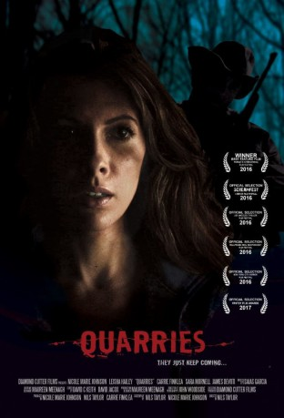

#11469 Die Beute - Aufspüren, Jagen, Töten
 
 IMDB-Wertung: 4.6 / 10
IMDB-Wertung: 4.6 / 10  Metascore: 0
Metascore: 0 
Um ihrem gewalttätigen Freund zu entkommen, schließt sich Kat (Nicole Marie Johnson) einer Gruppe Frauen an, die allesamt ihrem Alltag entfliehen wollen und deshalb einen Trip in die Wildnis unternehmen. Doch was eigentlich als erholsamer Ausflug gedacht war, wird bald zu einem Kampf ums Überleben. Die Frauen werden nämlich von brutalen Räubern gejagt und schnell trennt sich die Spreu vom Weizen – die schwachen Mitglieder der Gruppe bleiben zurück, die starken dürfen weiter hoffen und kämpfen. Nach und nach verlieren immer mehr ihr Leben und Kat muss feststellen, dass es nun nur noch auf eines ankommt: Ihre eigene Stärke, Rücksicht auf ihre Mitstreiterinnen kann sie keine mehr nehmen...
Jahr: 2016
Dauer: 83 Minuten
FSK: 16
Land: USA Studio: Amplify / Go DigitalTonspuren: - , - , - , - , - ,
Untertitel: Deutsch,
Auflösung: 1080p (1920x960) Größe: 5826 MB
Genre: Thriller, Horror, Drama
Regisseur: Nils Taylor
Drehbuch: Nils Taylor, Nicole Marie Johnson
Soundtrack: Isaias Garcia
Darsteller:
- Nicole Marie Johnson als Kat
- Carrie Finklea als Wren
- Leisha Hailey als Madison
- Sara Mornell als Jean
 Luke Edwards als Mitchell
Luke Edwards als Mitchell- Nicole DuPort als April
- Joy McElveen als Joy
- Rebecca McFadzien als Brit
- James Devoti als Ted
- Wes McGee als Zeb
- Cody Davis als Aja
- Dean Alioto als Cody
- Bryan Jordan als Wilson
- Marissa Chanel Hampton als Jennifer (uncredited)
- Jenna Michno als Shay (uncredited)
- Michael Yebba als Zeke
- Ray Fonseca als Chris
- Ryan O'Leary als Karl
Datei: X:\2016(A-F)\Beute - Aufspüren, Jagen, Töten, Die (2016, FSK16, 1920x960).mkv seit 13.07.2019
Festplatte: HD 2016(A-Z)
 Es gibt insgesamt 147 Filme in der Gruppe '2016(A-F)'
Es gibt insgesamt 147 Filme in der Gruppe '2016(A-F)'